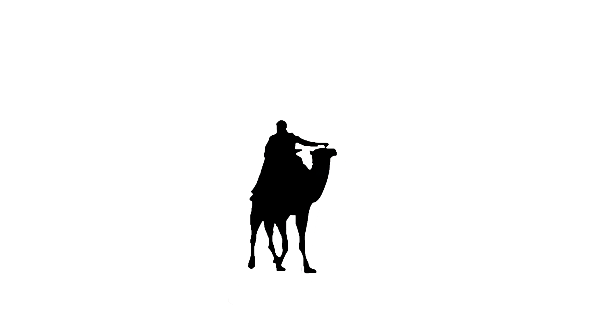
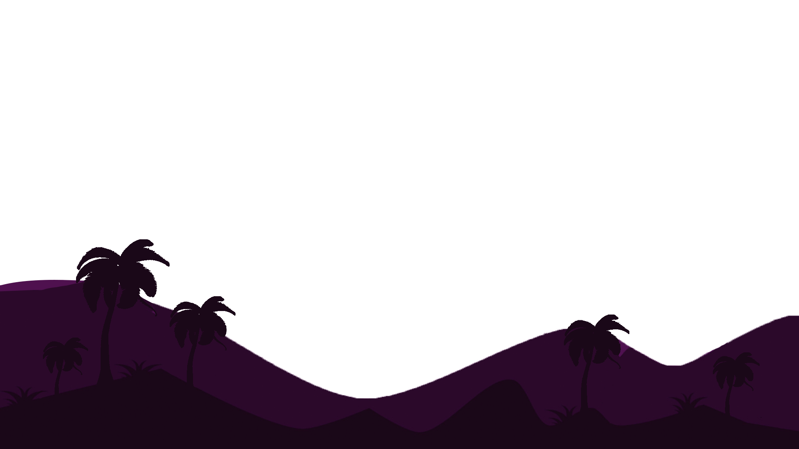
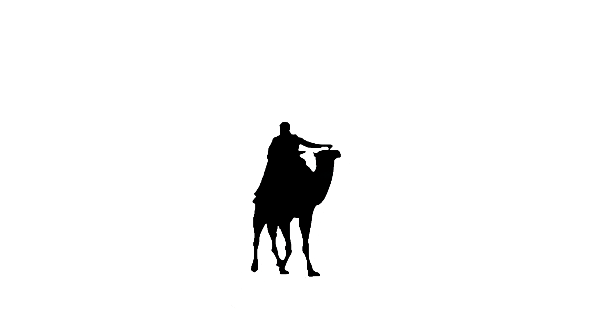
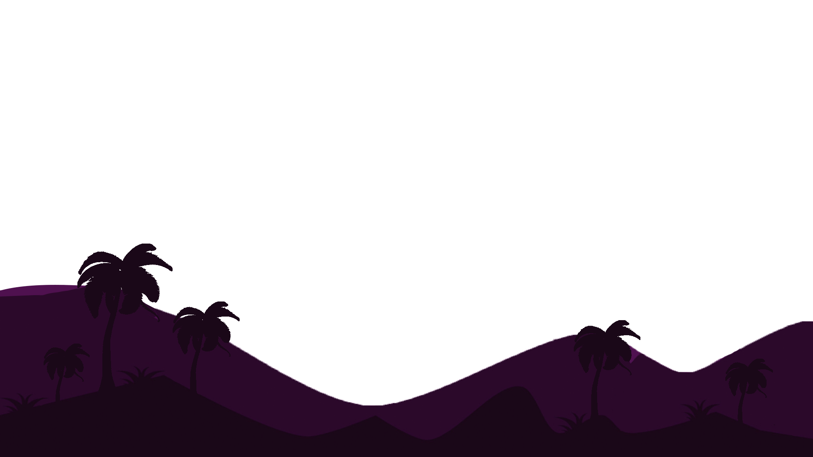

مهرجان صحارى دوز الدولي: ملاذ تحت أشعة الشمس في منتصف الشتاء
من 20 إلى 23 ديسمبر 2022 ، دع سحر الصحراء ينقلكم بمناسبة النسخة 51 من مهرجان دوز الدولي للصحراء.
احتفل المهرجان منذ عام 1910 بالتراث العربي البربري الغني للمنطقة. دوز هي بوابة الصحراء. من خلاله مرت ثقافات وأجيال عديدة من البدو والغزاة.
ترحب بك قبيلة Mrazigs من خلال برنامج غني ومتنوع يسمح لك بتقدير الجوانب المختلفة للحياة البدوية بشكل أفضل. على خلفية مكونة من الكثبان الرملية ستكتشف تقاليد المنطقة ؛ من حفلات الزفاف التقليدية إلى سباقات المهاري ومعارك الجمال.
ستتاح لرواد المهرجان الفرصة لاكتشاف الفنون المحلية الغنية بقدر ما هي آسرة بالمعارض والعروض الموسيقية ومعرض الكتاب والعروض الوثائقية.
تتناقض نضارة الشتاء مع دفء الشمس اللطيف الذي يضيء على الشجرة الرمزية للمنطقة: نخيل التمر. خلال أربعة أيام من المهرجان ، يدعوكم مهرجان دوز الدولي لاكتشاف عادات وتقاليد الثقافة البربرية والعربية.
ستجذب أجندة المهرجان جميع الأذواق ؛ عشاق الفنون والثقافة والموسيقى والرياضة والتاريخ والطبيعة وحتى أولئك الذين يبحثون عن ملاذ من الهدوء للتأمل والاستمتاع بالمناظر الطبيعية الرائعة.
سافر إلى دوز وافقد نفسك بين أشجار النخيل ؛ امتلئ بأشعة الشمس في الشتاء واحتفل بثقافة البربر والرحل مع مهرجان صحارى دو دوز الدولي!